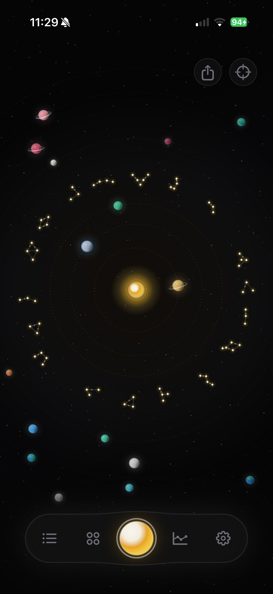
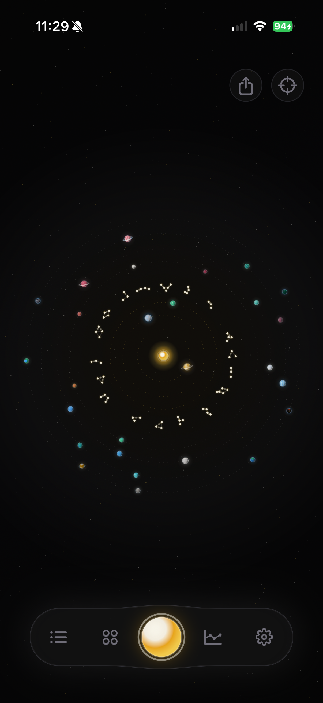
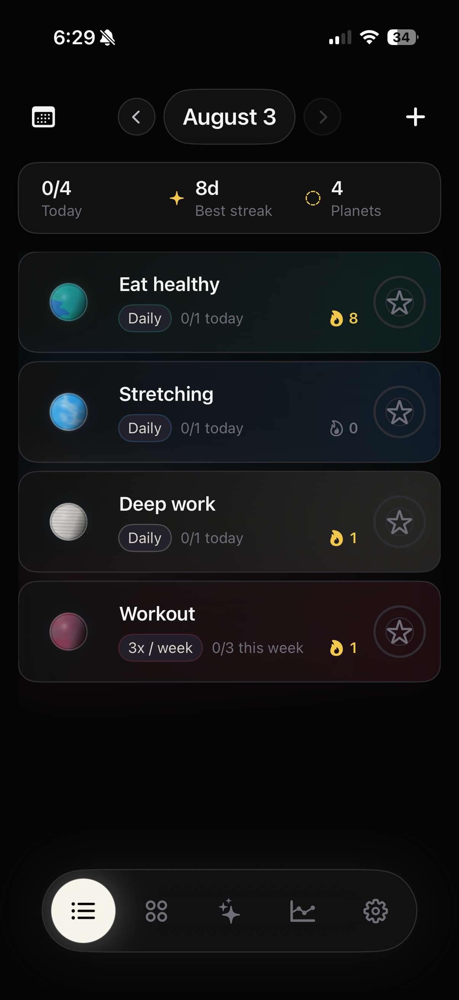
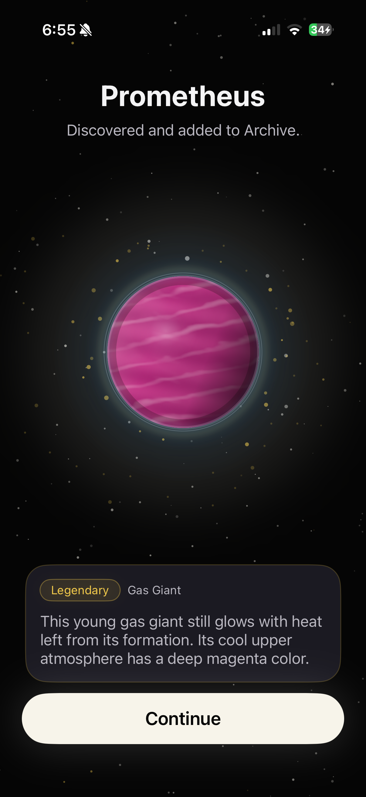
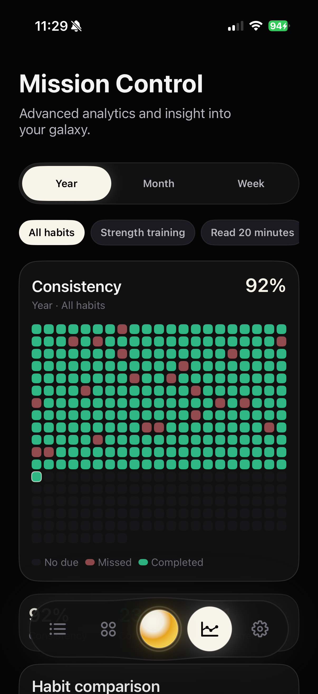

Private by design
Your habit and Galaxy data stays on your device. Solyx does not require an account.

Coming to iPhone
Solyx turns real consistency into planets, stars, and constellations you can see take shape over time.
Get launch news and occasional development updates. Unsubscribe anytime.
A habit tracker you can see
Solyx gives everyday progress somewhere to live. Every completion adds to a galaxy that is entirely yours.
Choose what you want to work on and a schedule you can realistically keep.
Each real completion grows your progress, locks stars, and brings the next discovery closer.
Reveal unique planets and constellations, then watch your personal system expand.
The Galaxy
Habits become orbiting planets. Completed days become stars. Consistency gradually reveals a celestial record that belongs only to you.

Daily rhythm
Log a habit in one tap, follow flexible daily or weekly schedules, and keep the focus on what you did today.

Celestial discoveries
Planets and constellations arrive through your Galaxy as you follow through. Every discovery has a permanent identity and a place in your Archive.
Explore 108 unique planets and 108 finite constellations.

Mission Control
Look beyond a single streak with clear weekly, monthly, and yearly views of the consistency building your Galaxy.

Built with intention
Your habit and Galaxy data stays on your device. Solyx does not require an account.
Build daily, weekly, or specific-day habits around the life you actually have.
Name your Galaxy, choose its appearance, and share a privacy-safe Field Journal.
Frequently asked questions
Solyx is currently in private beta for iPhone. Join the waitlist and you’ll be among the first to hear when it is ready.
Solyx is being built for iPhone first. There is no announced Android release yet.
No. Habit and Galaxy data is stored on your device. The website only collects your email if you choose to join the waitlist.
You’ll receive a confirmation email, occasional development updates, and launch news. You can unsubscribe at any time.
Your galaxy starts here
Join the waitlist for launch news and a closer look as the app takes shape.
No noise. Just meaningful Solyx updates.